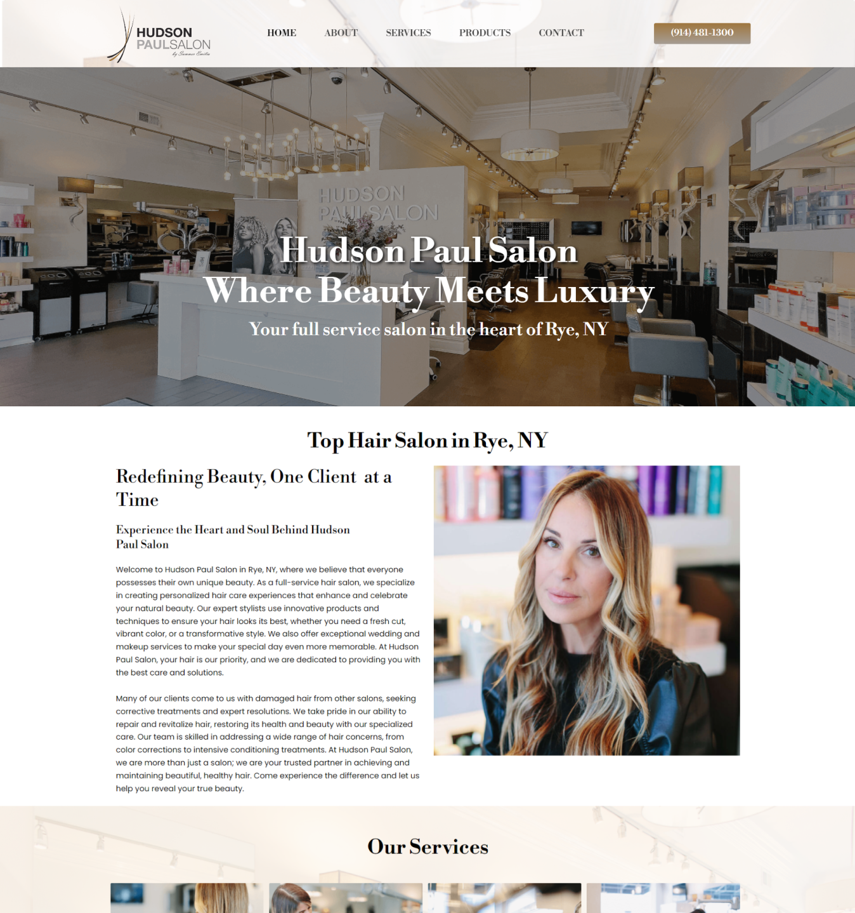
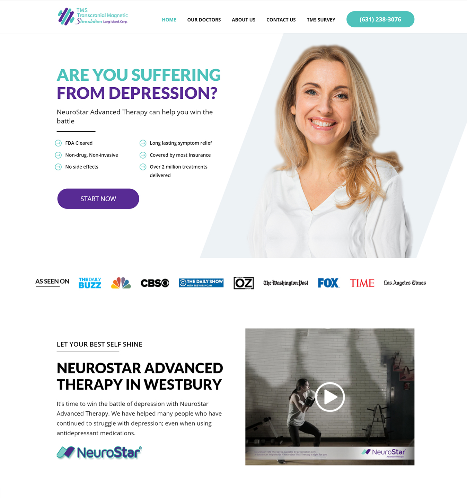
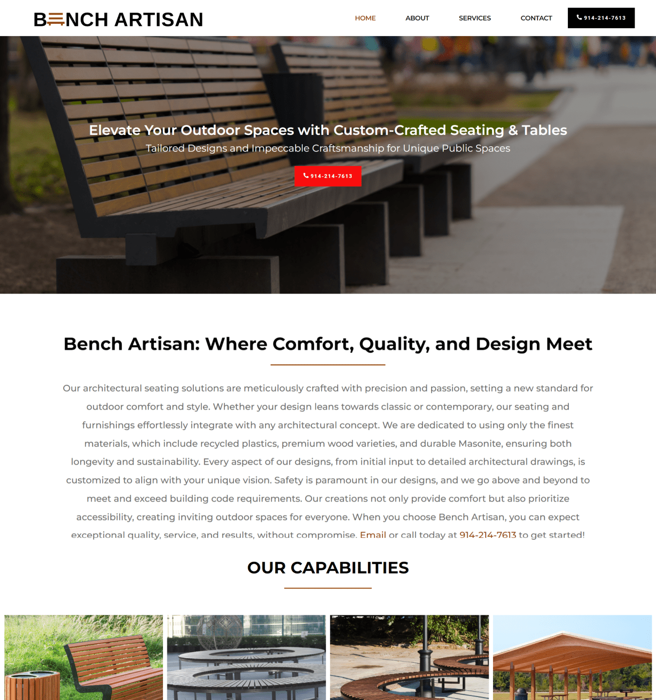
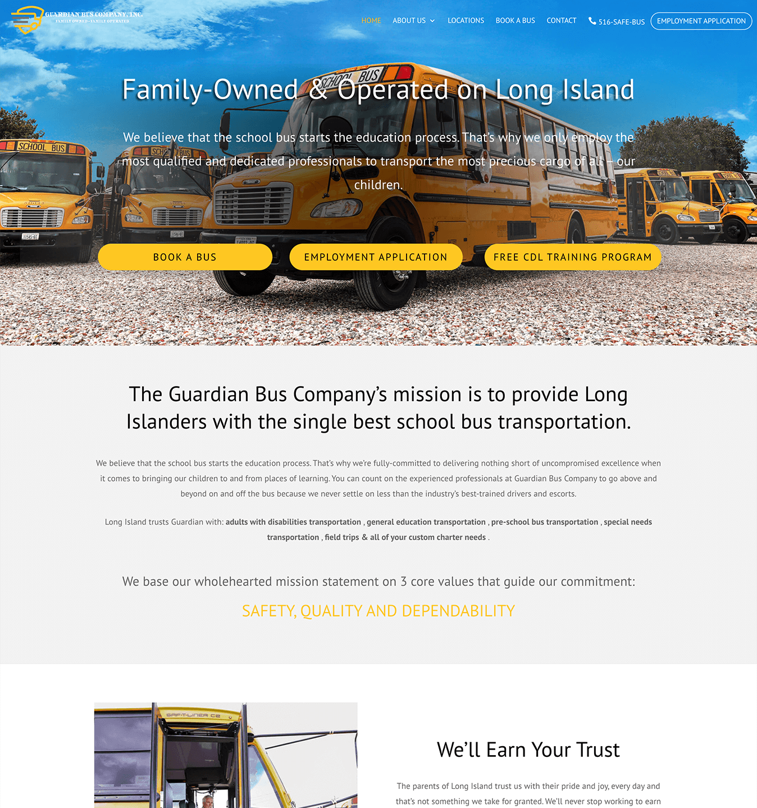
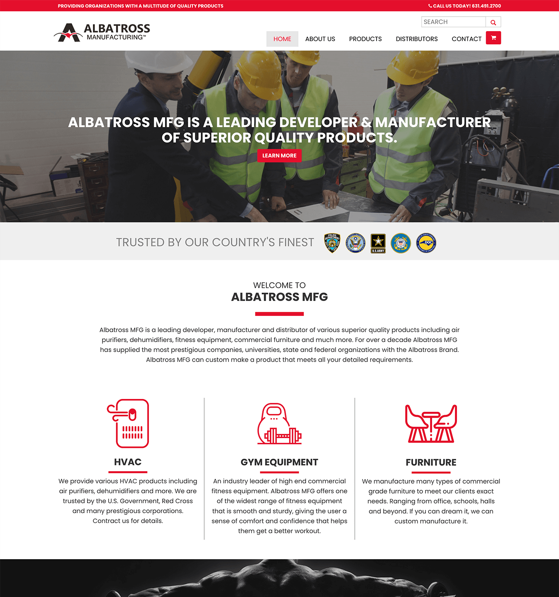

Hudson Paul Salon
Simone wanted an aesthetically beautiful website that would reflect the elegance and sophistication of their hair salon. The site was built with a responsive design, clean layouts, and search engine optimization to enhance visibility in search engines.

TMS Long Island Corp
Stephen and Kristen came to us after spending a lot on a poorly built site with a bad user interface. We rebuilt the website from the ground up, created a brand-new logo, and managed their SEO for maximum conversions.

Bench Artisan
Paul Karian sought a website that was modern, professional, and straightforward, reflecting craftsmanship in bench manufacturing. We utilized a minimalistic design, fast loading, and responsive layouts.

Garden City Renovations
To stand out in a highly competitive contracting market, we created a brand that looks trustworthy and professional, encouraging homeowners to call and request services.

The Couples Center
A simple, pretty WordPress site built using a flexible theme structure, allowing relationship counselors to manage their backend content easily, paired with local digital marketing.

Guardian Bus Company
Redesigned to focus on safety and reliability, positioning the bus company as a safe transport provider trusted with children, highlighting safety first across all pages.

Albatross MFG
Designed to position the manufacturer as a quality-first provider, highlighting prestigious customers, custom product abilities, and a clean E-commerce pipeline.

Nassau Roofing Experts
Built to address roofing needs in a competitive local niche, optimizing the conversion path and setting up local area SEO, resulting in high organic rankings and daily calls.